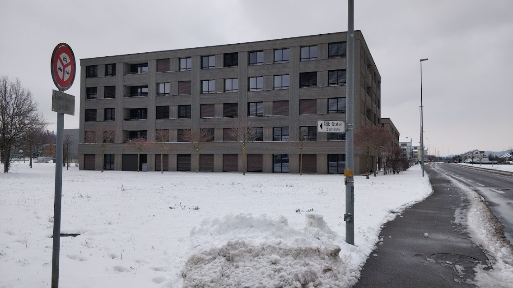
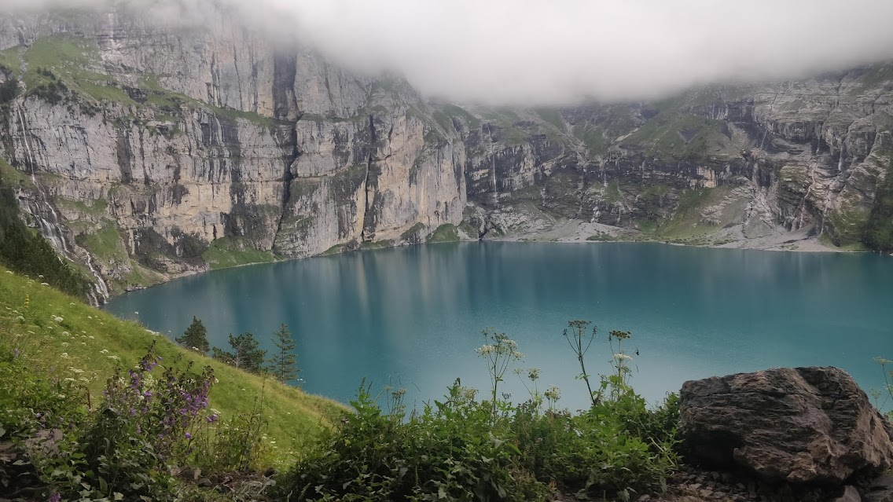

Earlier this year, I went to Switzerland for an 8 month internship. Due to the pandemic, things were not so good in the beginning. But they were better after the pandemic measures loosened. Despite all the lows brought on by the circumstances, I did get to learn a lot while I was there.
I spent my last two months travelling around Switzerland on the weekends with some friends - sometimes from the office and sometimes from the Studentenwohnheim. For the last two weeks I took time off and went on a solo trip across a few neighbouring countries. It was an amazing experience.
This was in sharp contrast to how I spent my time in 2020. I was at home due to lockdown, and I was put through some really hard times which left me in a dark void. A big reason why I decided to go to Switzerland was because I wanted to get out of it.
Over the last year, I got out of my comfort zone a lot more. I failed at things a lot more, and consequently I learnt a lot more. I am a much better person because of it. I only wish I had been thrown into the water earlier.
> Your comfort zone is killing you.
For now, I have returned to India. At this point, I don't really know what I want to do. I feel like I should first go back to asking what I truly want. Our wants change with time, and sometimes that change doesn't surface to our consciousness.
Who am I, what do I want, and how do I get there? I spend a lot of time pondering over these questions. I don't want to end up having a mid-life crisis decades later, where I realize I have been chasing a hollow goal that is not aligned with my inner-self.
> What is it that I truly want from life?
I'm not entirely sure. But most importantly, I want to be consistent on fulfilling my basic needs as a human being instead of striving for a rare moment of greatness in the distant future.
Since there are no guarantees in life, I'm vehemently opposed to living a deferred life. Sure, one needs to keep growing and learning to get to better places in life, but one should never sacrifice the present for the future. Do your best everyday. Stop thinking about your 5 year plan.
I'm finally catching up to what they mean when they say "live in the present". Doing your best everyday can be intoxicating. You can derive happiness simply out of being consistent every day, even if your circumstances aren't that great.
In my 2019 blog post, I had mentioned how much of an impact Atomic Habits had on me. I had left those ideas to dust for a while, but I've decided to pick them back up. Let's see how it goes.